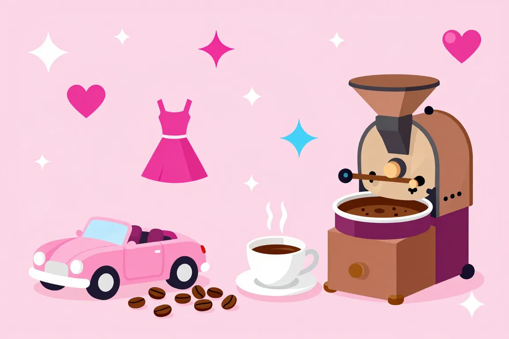

Én knallrosa på alt: rosa kjoler, rosa plast, rosa hus og blank leketøysglans. Bilder fra innspillingen av en Barbie-film i 2022 satte i gang trenden, og en rosa sesong i moten fulgte.

Kjerneidé
Gjør hele verden til én rosa og lek med den: leketøysglans og total farge gjør en dukke til en antrekkskode.
Designprinsipper
Sett bunnen i knallrosa (#E0218A) eller blek rosa (#FFE3F1) og hold rosa på 60 % eller mer av bildet.
Legg til ett sett støttefarger: hvit (#FFFFFF), himmelblå (#7FD0F2) og en mørk plomme (#4A0F32) til tekst.
Sett overskrifter i en tung, rund eller bred sans på 56px til 120px, stram med -0,02em, i hvitt på rosa eller plomme på blek rosa.
Gi flatene leketøysglans: et hvitt diagonalt høylys ved 35 % dekning og en indre kant på 2px i lysere rosa.
Kle ett motiv i rosa fra topp til tå, tatt rett forfra mot en rosa vegg i samme tone.
Bruk avrundede bokser på 20px til 32px, pillknapper og stjerne- eller hjertefunkler på 16px til 32px.
Ramm inn produkter som emballasje: en vindusboks med et rosa bakkort og en enkel prislapp.